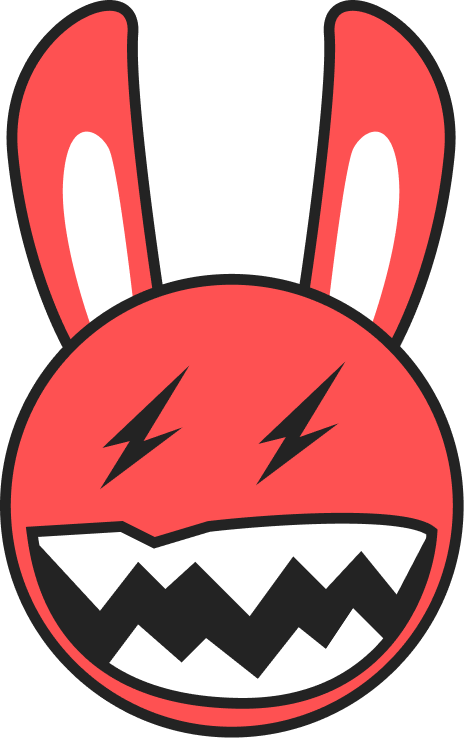
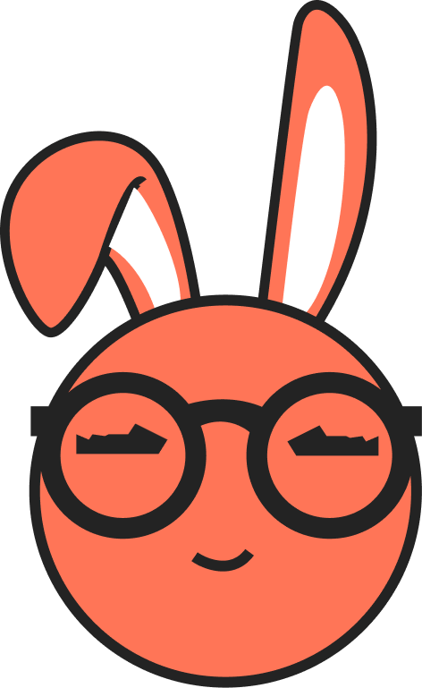
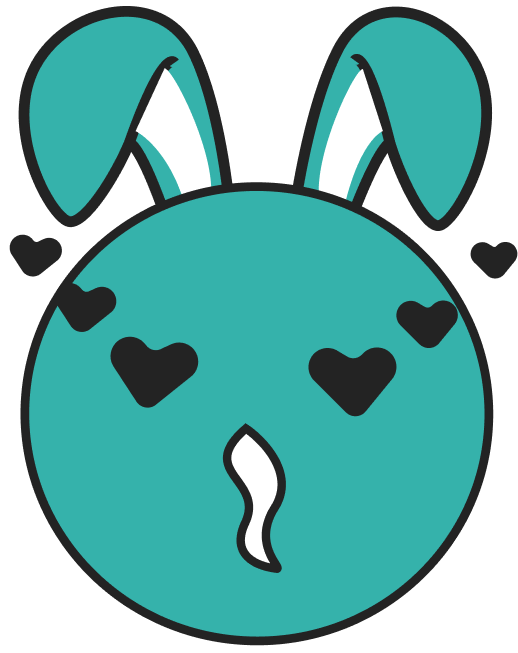

Department of Overnight Affairs
Minister of Overnight Affairs
Portfolio: Overnight Oats
Oversees all matters that resolve themselves while citizens sleep. Files no reports before noon, on principle.
We regulate mornings. The Cabinet has assembled in the field for the official portrait — straight faces, as required by protocol.



Ministry of Oats is the world's most charming bureaucracy — a real government department, run entirely for the benefit of your mornings.
We look and write like an actual ministry: circulars, decrees, registrations, constituencies, the lot. The wordplay is the wink, never the whole joke. And now the ministry has a face — a governing Cabinet of characters who hold the portfolios, stand for the portrait, and keep a completely straight face while doing it.
Maximum gravity. Minimum stakes. We never tell you it's fun. The deadpan does that.
Six ministers. Six portfolios. One unified position on the importance of a good breakfast. Portfolios are non-negotiable and mildly delicious.
Oversees all matters that resolve themselves while citizens sleep. Files no reports before noon, on principle.
Holds emergency powers over blending, texture and pace. Believes most problems can be solved at high speed.
Represents the Ministry abroad and at the counter. Has never lost a negotiation conducted before the first cup.
Responsible for outcomes that require soaking overnight and good things that take their time. Rarely rushed.
Maintains standards of arrangement, topping and depth. Considers a poorly assembled bowl a matter of public record.
Ensures every citizen receives what they are due — sweetly, and within the bounds of clean eating. Holds no grudges.
Two engines: bureaucratic officialese, and the occasional deadpan oat. Every campaign is a Circular. Every sign-off, an order of the Cabinet.
To become a citizen, take the Oath of Oats. Benefits are non-negotiable and mildly delicious.
How the Ministry refers to ordinary things. To be used consistently across all official communication.
| Ministry term | Means | |
|---|---|---|
| Citizen | → | Customer |
| Registration | → | Sign-up |
| Constituency | → | Loyalty base |
| The Oath of Oats | → | Loyalty signup |
| Devoated citizen | → | Loyal regular |
| Promoated | → | Tier upgrade |
| The Senoate | → | The menu |
| Diplomoat | → | A Cabinet character |
| Circular No. 0XX | → | A campaign |
Blue leads. A calm, confident sky over warm cream fields. Rich, never neon — the colours of a government that is, against all odds, in a good mood.
A warm characterful serif for gravity, a clean grotesque for plain speaking, and a monospace for the codes and reference numbers no ministry can live without.
The system, applied with a straight face. Campaign posters, citizen identity, packaging, and the official menu of the realm.
Effective immediately. The Ministry regrets the decades of delay.